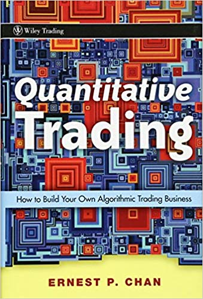
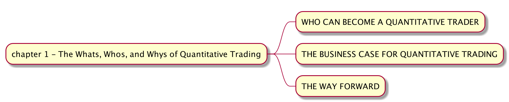

手动拆解《Quantitative Trading - How to Build Your Own Algorithmic Trading Business》（一）
- Author: Damon Yuan
- Date: 2020-09-27
- 微信公众号: 手动拆解《How to Build Your Own Algorithmic Trading Business》（一）
之前介绍了 backtrader 的基本架构和使用方法，今天这个系列从 Ernest Chan 的《Quantitative Trading - How to Build Your Own Algorithmic Trading Business》，手动拆解每一章的同时，用 backtrader 对策略进行实现。

为什么选这本书，原因很简单，就是简单。这本平平无奇的书用平实的语言向读者诠释了量化交易的基本思路，相比那些一上来就开始劝退的大部头，用户体验好得不只多了一丢丢。
话不多说，开始拆解第一章。

结构如上。
第一部分其实就是叫你不要慌，量化很简单，傻子都可以（你要是信以为真，那……那是内艺五……）。
第二部分和你说量化很赚钱，做得好可以规模化，解放你的双手不要996，简单粗暴直接对 money 做交易不要什么市场调研之类的，总之就是棒棒的，比起作者的创业体验那是好得不要不要的。
第三部分就是提一些问题给你，比如怎么发现交易策略啊，怎么评估策略好坏啊，怎么回测啊，总之先把小白如我心里问得毛毛毛的，然后告诉你莫要慌，这些我在后面几章都会讲 - _ -。理解一下，出书字数还是要凑点的，一来显得不那么工具书有文化，二来字数上去了卖的钱才多嘛。
第一章就是这样，平平无奇的辣鸡，你要是没空，duck 不看。我们再看下章分解。